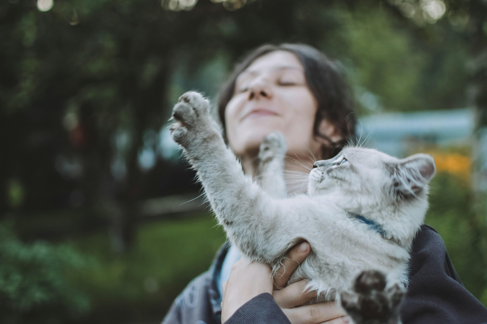

Home
About
Location
Get in Touch
Reviews
Cat sitting
Looking after plants and fish
Making sure the house is secure
Playing with your cat
Litter cleaning
Playtime
Keeping you up to date by sending you a photo on WhatsApp
Drop In – £10
Overnight – £25
